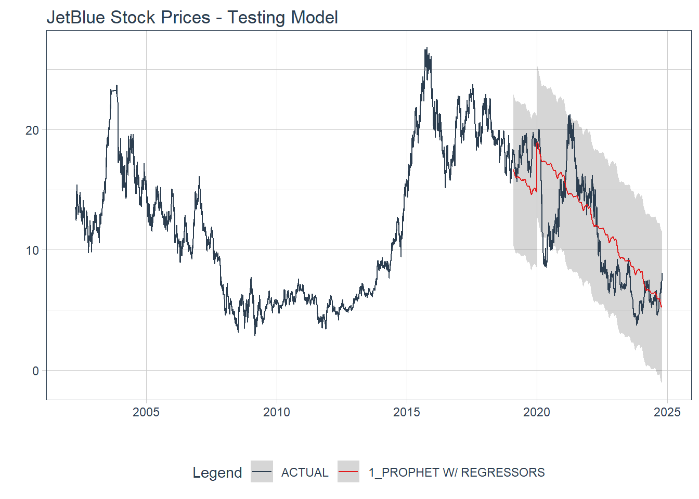
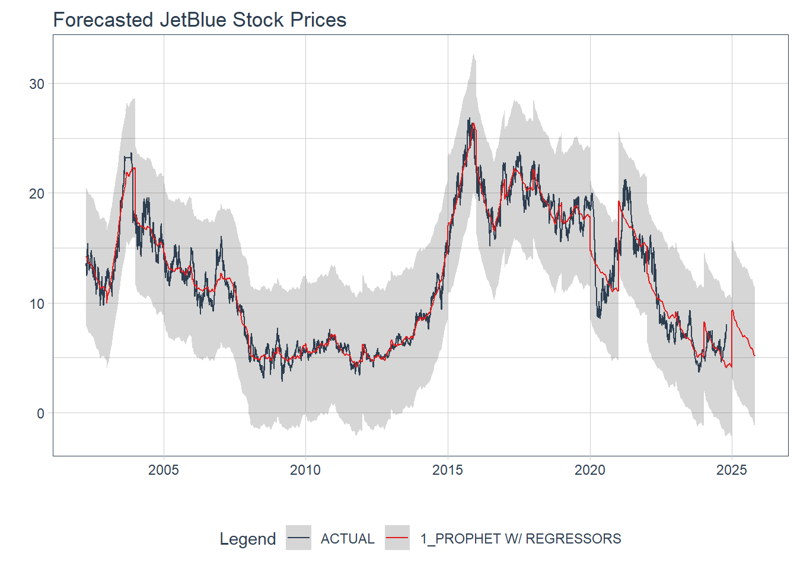

library(tidyverse)
library(tidymodels)
library(prophet)
library(lubridate)
library(modeltime)
library(timetk)Forecasting with Prophet Model
googlesheets4::gs4_deauth()
theme_set(theme_light())
jet <-
googlesheets4::read_sheet("https://docs.google.com/spreadsheets/d/1SpRXsC3kXDaQLUfC6cPIOvsqxDF6updhgHRJeT8PTog/edit#gid=0", sheet = 1) %>%
janitor::clean_names() %>%
mutate(ds = as_date(date))jetblue <- jet %>%
mutate(actual_day = wday(ds,
label = TRUE),
clean = ts_clean_vec(close)) %>%
separate(col = date,
into = c('year_num', 'month_num', 'day_num'),
sep = '-') %>%
mutate(year_num = as.factor(year_num),
year_num = relevel(year_num, ref = '2002')) %>%
separate(col = day_num,
into = c('day_num', 'drop'),
sep = ' ') %>%
mutate(day_num = as.numeric(day_num),
month_num = as.factor(month_num)) %>%
select(-drop) %>%
arrange(ds)jetblue %>%
group_by(year_num, month_num) %>%
summarize(var_value = sd(close)^2) %>%
ungroup() %>%
ggplot(aes(month_num, var_value)) +
geom_point() +
facet_wrap(vars(year_num))
only_numeric <- jetblue %>%
select(close, clean)
map2(only_numeric,
names(only_numeric),
~ggplot(data = only_numeric,
aes(.x)) +
geom_histogram(color = 'white',
fill = 'dodgerblue') +
geom_vline(xintercept = mean(.x) +
sd(.x) +
sd(.x) +
sd(.x),
color = 'red',
size = 1.25,
linetype = 2) +
geom_vline(xintercept = mean(.x) -
sd(.x) -
sd(.x) -
sd(.x),
color = 'red',
size = 1.25,
linetype = 2) +
labs(title = .y))$close
$cleanmap2(only_numeric,
names(only_numeric),
~only_numeric %>%
plot_time_series(jetblue$ds,
.x,
.interactive = FALSE) +
labs(title = .y))$close
$clean
jetblue %>%
plot_anomaly_diagnostics(ds,
clean,
.facet_ncol = 1,
.interactive = FALSE)
jetblue %>%
tk_anomaly_diagnostics(ds,
clean) %>%
ggplot(aes(ds, observed)) +
geom_line() +
geom_point(aes(color = anomaly)) +
viridis::scale_color_viridis(option = 'D',
discrete = TRUE,
begin = .5,
end = 0)
anomaly <- jetblue %>%
tk_anomaly_diagnostics(ds,
clean)
jetblue <- left_join(jetblue, anomaly) %>%
filter(anomaly != 'Yes')jetblue %>%
plot_seasonal_diagnostics(ds,
clean,
.interactive = FALSE)set.seed(05262022)
parallel::detectCores()[1] 12parallel_start(10,
.method = 'parallel')set.seed(05262022)
jet_split <- initial_time_split(jetblue)prophet_mod <- function(splits,
changepoints = .05,
seasonality = .01,
holiday = .01,
season_type = 'additive',
day_season = 'auto',
week_season = 'auto',
year_season = 'auto',
train = TRUE){
library(tidyverse)
library(tidymodels)
library(modeltime)
library(prophet)
analy_data <- analysis(splits)
assess_data <- assessment(splits)
model <- prophet_reg() %>%
set_engine(engine = 'prophet',
verbose = TRUE) %>%
set_args(prior_scale_changepoints = changepoints,
prior_scale_seasonality = seasonality,
prior_scale_holidays = holiday,
season = season_type,
seasonality_daily = day_season,
seasonality_weekly = week_season,
seasonality_yearly = year_season) %>%
fit(clean ~ ds + year_num,
data = analy_data)
if(train == TRUE){
train_cali <- model %>%
modeltime_calibrate(new_data = analy_data)
train_acc <- train_cali %>%
modeltime_accuracy()
return(list(train_cali, train_acc))
}
else{
test_cali <- model %>%
modeltime_calibrate(new_data = assess_data)
test_acc <- test_cali %>%
modeltime_accuracy()
return(list(test_cali, test_acc))
}
}set.seed(05262022)
baseline <- prophet_mod(jet_split,
train = TRUE) %>%
pluck(2)Disabling daily seasonality. Run prophet with daily.seasonality=TRUE to override this.Converting to Modeltime Table.baseline# A tibble: 1 × 9
.model_id .model_desc .type mae mape mase smape rmse rsq
<int> <chr> <chr> <dbl> <dbl> <dbl> <dbl> <dbl> <dbl>
1 1 PROPHET W/ REGRESSORS Fitted 0.880 8.15 4.07 7.99 1.18 0.963prophet_mod(jet_split,
train = TRUE) %>%
pluck(1) %>%
modeltime_forecast(new_data = training(jet_split),
actual_data = jetblue) %>%
plot_modeltime_forecast(.interactive = FALSE) +
labs(title = 'Prophet Baseline Model')
set.seed(05262022)
proph_model <- prophet_reg() %>%
set_engine(engine = 'prophet',
verbose = TRUE) %>%
set_args(prior_scale_changepoints = tune(),
prior_scale_seasonality = tune(),
prior_scale_holidays = tune(),
season = 'additive',
seasonality_daily = 'auto',
seasonality_weekly = 'auto',
seasonality_yearly = 'auto')
proph_rec <-
recipe(clean ~ ds + year_num,
data = training(jet_split))
set.seed(05262022)
train_fold <-
rolling_origin(training(jet_split),
initial = 270,
assess = 90,
skip = 30,
cumulative = TRUE)
set.seed(05262022)
grid_values <-
grid_latin_hypercube(prior_scale_changepoints(),
prior_scale_seasonality(),
prior_scale_holidays(),
size = 5)
set.seed(05262022)
proph_fit <- tune_grid(object = proph_model,
preprocessor = proph_rec,
resamples = train_fold,
grid = grid_values,
control = control_grid(verbose = TRUE,
save_pred = TRUE,
allow_par = TRUE))
tuned_metrics <- collect_metrics(proph_fit)
tuned_metrics %>%
filter(.metric == 'rmse') %>%
arrange(mean)
# saveRDS(tuned_metrics,
# file = 'tuned_metrics.rds')metrics <-
readr::read_rds(here::here('projects/forecasting', 'tuned_metrics.rds'))
metrics %>%
filter(.metric == 'rmse') %>%
arrange(mean)# A tibble: 5 × 9
prior_scale_changepoints prior_scale_seasonality prior_scale_holidays .metric
<dbl> <dbl> <dbl> <chr>
1 3.53 0.0170 1.12 rmse
2 0.884 36.4 0.0131 rmse
3 0.00139 0.00166 0.00172 rmse
4 0.0549 0.261 0.231 rmse
5 43.0 3.80 12.2 rmse
# ℹ 5 more variables: .estimator <chr>, mean <dbl>, n <int>, std_err <dbl>,
# .config <chr>final_train <- prophet_mod(jet_split,
changepoints = 3.53,
seasonality = .017,
holiday = 1.12,
train = TRUE) %>%
pluck(2)
final_train# A tibble: 1 × 9
.model_id .model_desc .type mae mape mase smape rmse rsq
<int> <chr> <chr> <dbl> <dbl> <dbl> <dbl> <dbl> <dbl>
1 1 PROPHET W/ REGRESSORS Fitted 0.793 7.27 3.67 7.15 1.09 0.968prophet_mod(jet_split,
changepoints = 3.53,
seasonality = .017,
holiday = 1.12,
train = TRUE) %>%
pluck(1) %>%
modeltime_forecast(new_data = training(jet_split),
actual_data = jetblue) %>%
plot_modeltime_forecast(.interactive = FALSE) +
labs(title = 'JetBlue Stock Prices - Training Model')
prophet_mod(jet_split,
changepoints = 3.53,
seasonality = .017,
holiday = 1.12,
train = FALSE) %>%
pluck(1) %>%
modeltime_forecast(new_data = testing(jet_split),
actual_data = jetblue) %>%
plot_modeltime_forecast(.interactive = FALSE) +
labs(title = 'JetBlue Stock Prices - Testing Model')
test_model <- prophet_mod(jet_split,
changepoints = 3.53,
seasonality = .017,
holiday = 1.12,
train = FALSE) %>%
pluck(2)
test_model# A tibble: 1 × 9
.model_id .model_desc .type mae mape mase smape rmse rsq
<int> <chr> <chr> <dbl> <dbl> <dbl> <dbl> <dbl> <dbl>
1 1 PROPHET W/ REGRESSORS Test 2.61 26.9 10.7 23.0 3.22 0.610future <- jetblue %>%
future_frame(.length_out = '1 year', .bind_data = TRUE)
future <-
future %>%
select(-year_num, -month_num, -day_num) %>%
mutate(date2 = ds) %>%
separate(col = date2,
into = c('year_num', 'month_num', 'day_num'),
sep = '-') %>%
mutate(year_num = as.factor(year_num),
year_num = relevel(year_num, ref = '2002'),
month_num = as.factor(month_num),
day_num = as.numeric(day_num)) %>%
arrange(ds)
glimpse(future)Rows: 5,954
Columns: 17
$ close <dbl> 13.33, 13.40, 13.57, 13.36, 13.10, 12.93, 12.45, 12.56, …
$ ds <date> 2002-04-12, 2002-04-15, 2002-04-16, 2002-04-17, 2002-04…
$ actual_day <ord> Fri, Mon, Tue, Wed, Thu, Fri, Mon, Tue, Wed, Thu, Fri, M…
$ clean <dbl> 13.33, 13.40, 13.57, 13.36, 13.10, 12.93, 12.45, 12.56, …
$ observed <dbl> 13.33, 13.40, 13.57, 13.36, 13.10, 12.93, 12.45, 12.56, …
$ season <dbl> -0.0040669947, -0.0001402400, -0.0060905977, 0.000428668…
$ trend <dbl> 13.40444, 13.41395, 13.42347, 13.43298, 13.44250, 13.452…
$ remainder <dbl> -0.0703727968, -0.0138136387, 0.1526226318, -0.073410722…
$ seasadj <dbl> 13.33407, 13.40014, 13.57609, 13.35957, 13.09013, 12.934…
$ remainder_l1 <dbl> -2.186995, -2.186995, -2.186995, -2.186995, -2.186995, -…
$ remainder_l2 <dbl> 2.198396, 2.198396, 2.198396, 2.198396, 2.198396, 2.1983…
$ anomaly <chr> "No", "No", "No", "No", "No", "No", "No", "No", "No", "N…
$ recomposed_l1 <dbl> 11.21338, 11.22682, 11.23038, 11.24642, 11.26537, 11.260…
$ recomposed_l2 <dbl> 15.59877, 15.61221, 15.61577, 15.63181, 15.65076, 15.646…
$ year_num <fct> 2002, 2002, 2002, 2002, 2002, 2002, 2002, 2002, 2002, 20…
$ month_num <fct> 04, 04, 04, 04, 04, 04, 04, 04, 04, 04, 04, 04, 04, 05, …
$ day_num <dbl> 12, 15, 16, 17, 18, 19, 22, 23, 24, 25, 26, 29, 30, 1, 2…test_model1 <- prophet_mod(jet_split,
changepoints = 3.53,
seasonality = .017,
holiday = 1.12,
train = FALSE) %>%
pluck(1)
test_model1 %>%
modeltime_refit(data = future) %>%
modeltime_forecast(new_data = future,
actual_data = jetblue) %>%
plot_modeltime_forecast(.interactive = FALSE) +
labs(title = 'Forecasted JetBlue Stock Prices')
link <- 'https://docs.google.com/spreadsheets/d/11DWSWLFXT84uGg_mBvVYJevQOsN7ghYovJefH87BJXc/edit#gid=0'
amer <-
googlesheets4::read_sheet(link, , sheet = 1, range = "A1:B1000") %>%
janitor::clean_names() %>%
mutate(ds = as_date(date))
american <-
amer %>%
mutate(actual_day = wday(ds,
label = TRUE),
clean = ts_clean_vec(close)) %>%
separate(col = date,
into = c('year_num', 'month_num', 'day_num'),
sep = '-') %>%
mutate(year_num = as.factor(year_num),
year_num = relevel(year_num, ref = '2013')) %>%
separate(col = day_num,
into = c('day_num', 'drop'),
sep = ' ') %>%
mutate(day_num = as.numeric(day_num),
month_num = as.factor(month_num)) %>%
select(-drop) %>%
arrange(ds)
model <- prophet_reg() %>%
set_engine(engine = 'prophet',
verbose = TRUE) %>%
set_args(prior_scale_changepoints = 3.53,
prior_scale_seasonality = .017,
prior_scale_holidays = 1.12,
season = 'additive',
seasonality_daily = 'auto',
seasonality_weekly = 'auto',
seasonality_yearly = 'auto') %>%
fit(clean ~ ds + year_num,
data = american)
model_cali <- model %>%
modeltime_calibrate(new_data = american)
model_cali %>%
modeltime_accuracy()# A tibble: 1 × 9
.model_id .model_desc .type mae mape mase smape rmse rsq
<int> <chr> <chr> <dbl> <dbl> <dbl> <dbl> <dbl> <dbl>
1 1 PROPHET W/ REGRESSORS Fitted 1.29 3.12 1.86 3.11 1.65 0.931future_amer <- american %>%
future_frame(.length_out = '1 year', .bind_data = TRUE)
future_amer <-
future_amer %>%
select(-year_num, -month_num, -day_num) %>%
mutate(date2 = ds) %>%
separate(col = date2,
into = c('year_num', 'month_num', 'day_num'),
sep = '-') %>%
mutate(year_num = as.factor(year_num),
year_num = relevel(year_num, ref = '2013'),
month_num = as.factor(month_num),
day_num = as.numeric(day_num))
model_cali %>%
modeltime_forecast(new_data = american,
actual_data = american) %>%
plot_modeltime_forecast(.interactive = FALSE) +
labs(title = 'Predicted American Airlines Stock Prices')
model_cali %>%
modeltime_refit(data = future_amer) %>%
modeltime_forecast(new_data = future_amer,
actual_data = american) %>%
plot_modeltime_forecast(.interactive = FALSE) +
labs(title = 'Forecasted American Airlines Stock Prices')